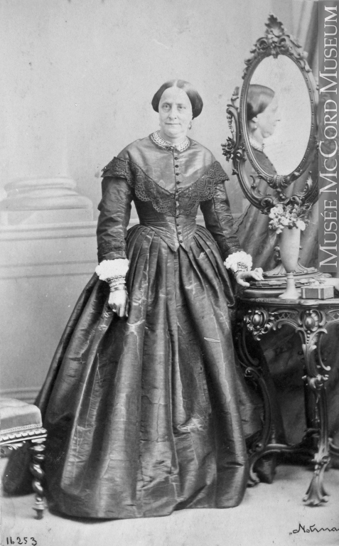
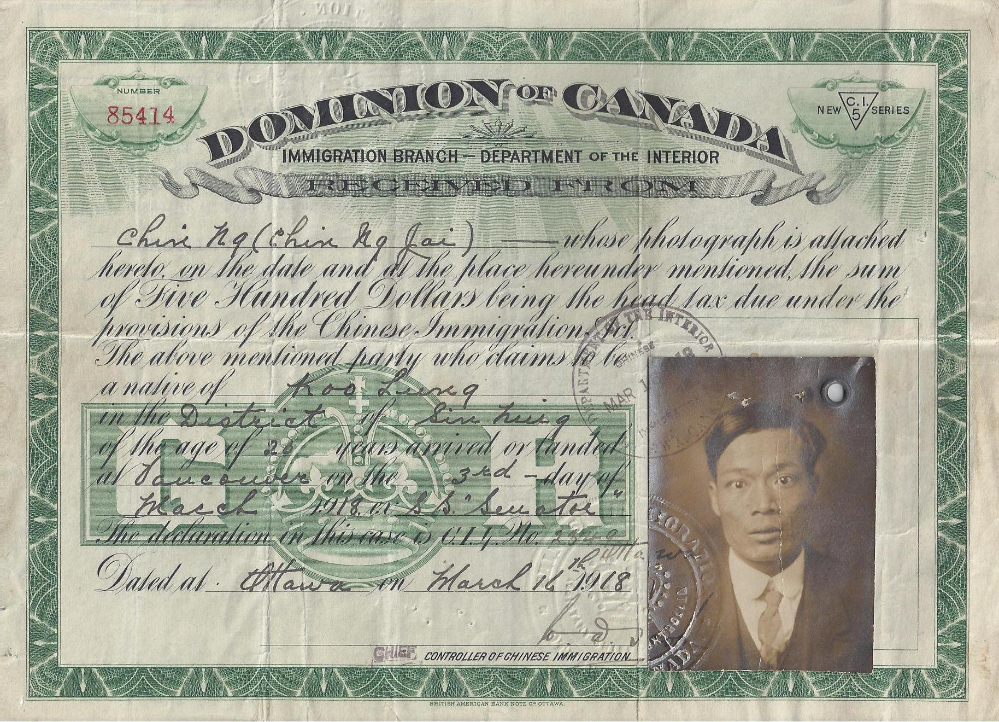
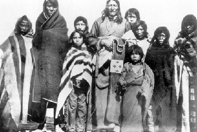

In 1867, people didn't care about quality, so not much was changed untill the 1900s because that was when the world wars started and a lot of people fought for it.
People didn't care at the time because it was already normal and it was more trouble to change than it was worth.
No matter what race, women were treated worse to their male counterparts. It has always been normalized at the time that women existed just to produce and take care of children. They usually didn’t have jobs, but if they did, they were paid very little. They were forced into arranged marriges that would benefit their families in terms of politics or wealth. The women who didn’t marry were discriminated against even more as since most people were Christian, people’s religeous beliefs and expectations of women made it worse. Women and children consisted of 50% of the light work.
Chinese migrants and Indigenous people worked labour intensive jobs on railways and got paid almost half of what Europeans did for the same work. Even though the Chinese did a lot of labour in Canada, a few years after confederation, a head tax was passed to limit them from migrating to canada by making them pay around 100 dollars at the time just to stay in Canada, which equalled thousands of dollars today. This act lasted for almost 40 years. Indigenous people also got their land taken and they were still discriminated against. The indigenous people had more equality, as both the men and women had more control in what they could do instead of being forced by gender roles. They were still getting assimilated because residential schools were still on and indigenous people were forced into reserves. In these reserves, they were provided housing and some land, but they had to pay money even though they owned the land in the first place. They were also assimilated by not being able to use nature, where they could express their culture and being forced into being close to moden buildings. After Confederation, the French became the minority, being mostly located in Quebec. This led many people to worry about French culture being lost as it was being replaced by the English majority, so the government made French one of the primary languages and have its own cultural identity. There were also political disputes between English and French speaking provinces about languages and culture. They were also guaranteed representation in the government, but they still felt marginalized due to the English speaking dominance. Even though the French were treated as people of colour, they still faced a variety of pros and cons from confederation. Around confederation, the indigenous lost Rupert’s Land after it was sold to the Canadian government, but the government didn’t even consult the first nations and metis already living there, basically stealing land. This led to the Metis National Commitee, led by Louis Riel, who was french and metis, resisting the changes, but eventually he got executed due to leading the North-West Rebellion of 1885.
 Starting from the early 1900s, gradually, over decades, people became more aware of this inequality and decided to do something about it, leading to more equality but still far from perfect.